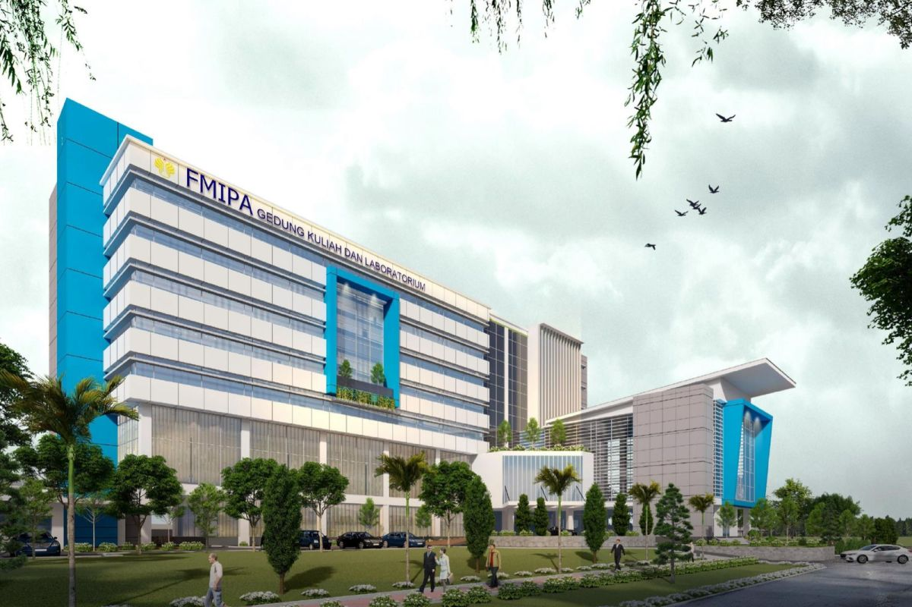

PENDIDIKAN

Selama menempuh pendidikan di Universitas Negeri Semarang, saya mempelajari berbagai hal yang berkaitan dengan sistem informasi, mulai dari pemahaman teknologi hingga proses pengembangan solusi berbasis digital. Perjalanan ini juga mendorong saya untuk terus mengembangkan kemampuan di bidang teknologi dan pemrograman.
TENTANG SAYA
Saya adalah pribadi yang tertarik untuk terus mempelajari hal-hal baru di bidang teknologi. Selain berfokus pada perkuliahan, saya juga senang mengembangkan kemampuan melalui proses belajar dan mencoba hal-hal baru. Pada tahun 2025, saya berkesempatan menjadi penerima Beasiswa Garuda, yang menjadi salah satu pengalaman berharga dalam perjalanan pendidikan saya.